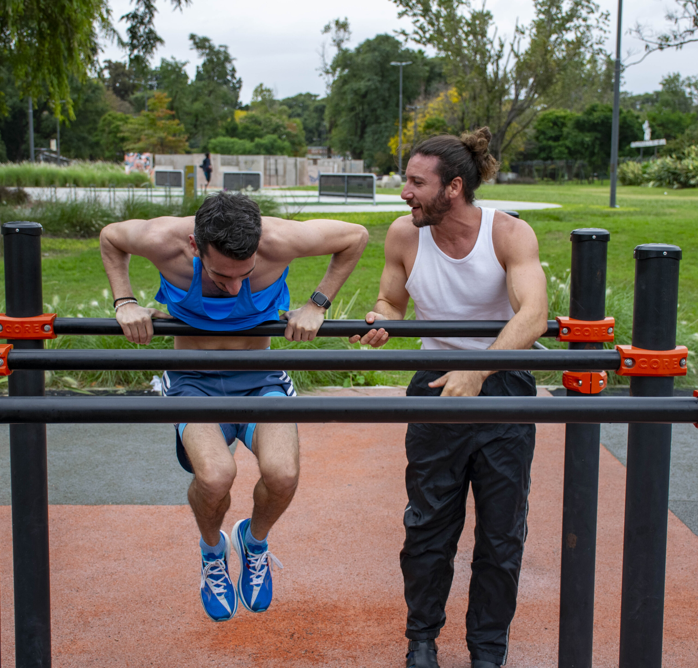
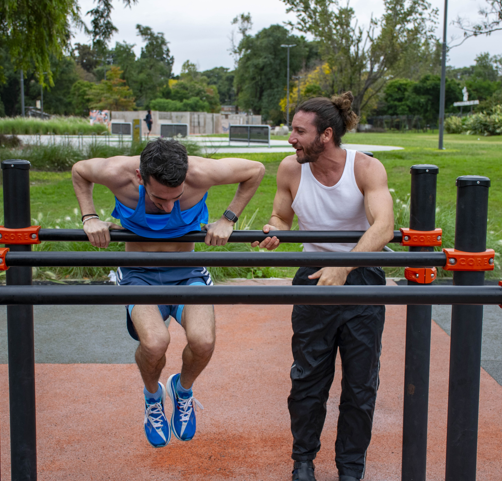

Seba
Kinesiólogo y Entrenador de Calistenia
Transformá tu cuerpo y mente a través del movimiento
Servicios
Calistenia
Entrenamiento funcional usando el peso de tu propio cuerpo
Kinesiología
Tratamiento y rehabilitación personalizada
Entrenamiento Espiritual
Desarrollo integral cuerpo-mente
 

Sobre Mí
Hola, soy Seba — entrenador de calistenia, masajista, actor y kinesiólogo.
En mis clases trabajamos fuerza, movilidad y conciencia corporal. Usamos ejercicios como planchas, puentes, movilidad de columna, dominadas, flexiones y verticales para construir un cuerpo más fuerte y flexible. Están pensadas para cualquier persona: adultos mayores, principiantes o quienes ya entrenan. Vamos a tu ritmo, con el objetivo de avanzar de forma sostenida y mejorar la calidad de vida.
También ofrezco masajes. Es un espacio para soltar tensiones, acompañar la recuperación y trabajar la flexibilidad desde otro lado.
Más allá del cuerpo, me interesa mucho cómo nos vinculamos con nosotros mismos y con los demás. Estudio Un Curso de Milagros con mi papá —una práctica espiritual que compartimos y que nos ayuda a reflexionar y conectar. Además, actúo en una obra histórica (La Lección de Anatomía), que cuestiona los mandatos, miedos y roles que tomamos en la vida: como pareja, hijos, padres o trabajadores.
En todo lo que hago, mi intención es la misma: ayudar a que las personas se sientan más conectadas —con su cuerpo, con los demás y con algo más grande. Mis clases son un espacio para moverse, crecer, reír y, poco a poco, formar una comunidad más tranquila.
Testimonios
"Próximamente..."
Contacto
¡Escribime por WhatsApp para más información!